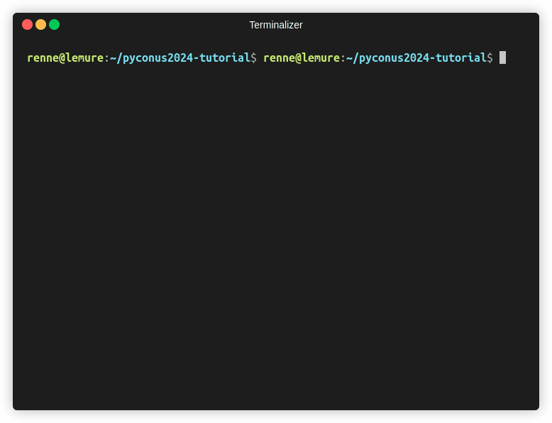
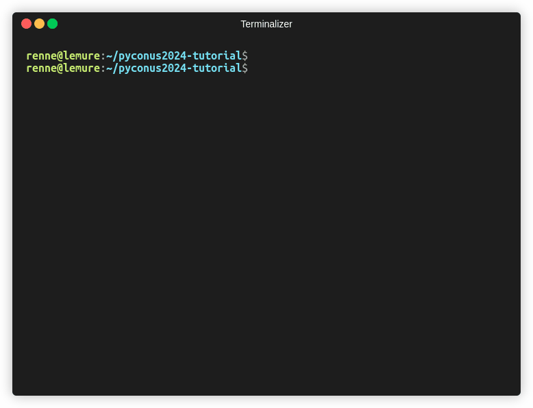
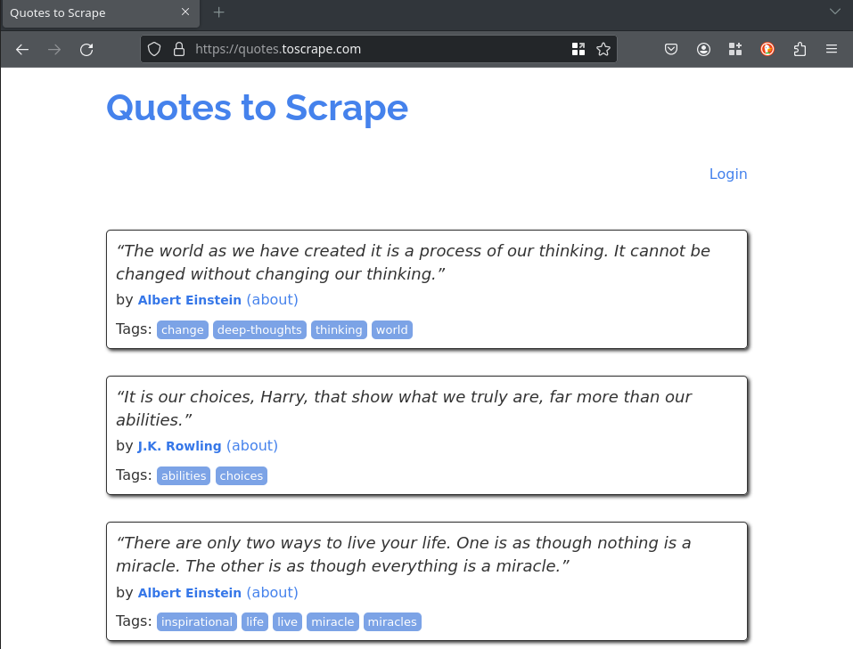
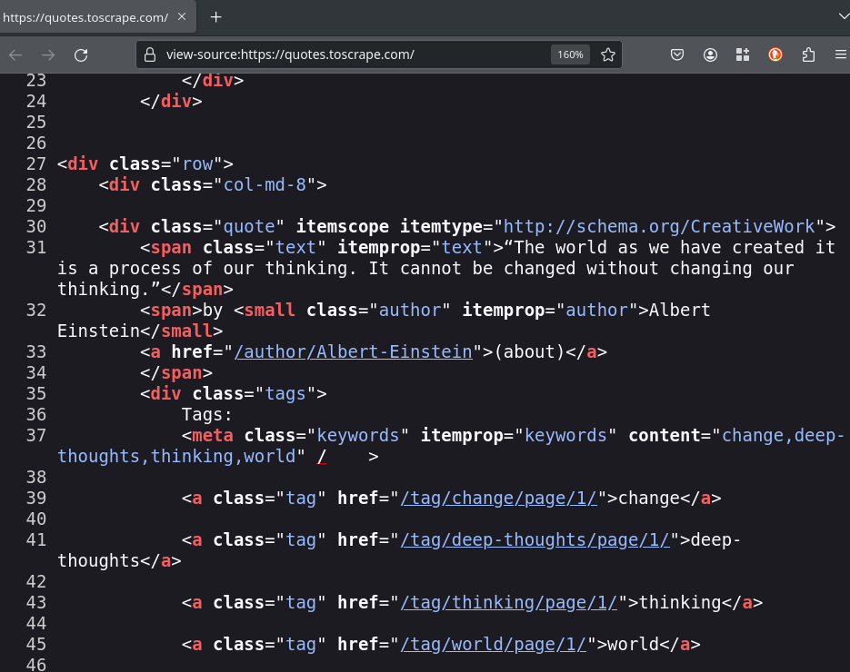
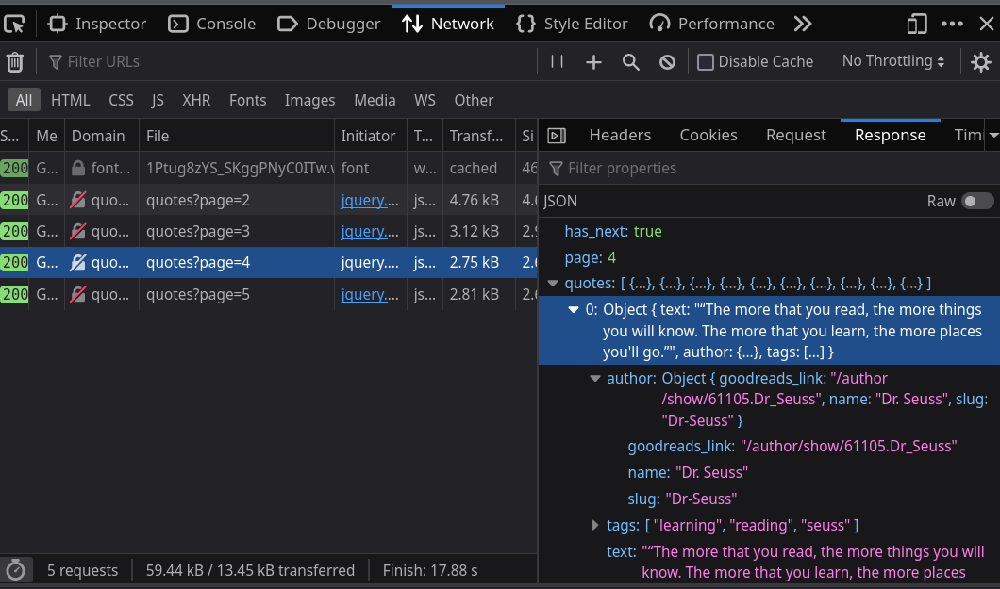
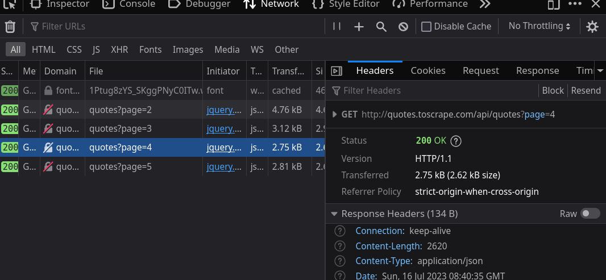
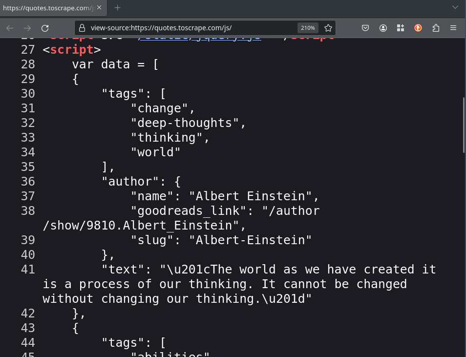

class: center middle # Gathering data from the web using Python ### PyCon US 2024 - 16 / 05 / 2024 --- # Agenda - Web scraping fundamentals 🧑🏫 - Scrapy basic concepts 🧑🏫 - Exercise 1: Scraping a basic HTML page 👩💻 🧑💻 - Exercise 2: Scraping Javascript generated content (external API) 👩💻 🧑💻 - Exercise 3: Scraping Javascript generated content (data into HTML) 👩💻 🧑💻 - Exercise 4: Scraping page with multiple requests for an item 👩💻 🧑💻 - Headless browsers 🧑🏫 - Beyond the spiders 🧑🏫 - Q&A 🧑🏫 👩💻 🧑💻 --- # Renne Rocha <div id="left"> <br/><br/> </div> <div id="right"> <ul> <li>Maintainer of <strong>Querido Diário</strong><br/> https://queridodiario.ok.org.br/</li> <br/> <li>Maintainer of <strong>Spidermon</strong><br/> https://spidermon.readthedocs.io/</li> <br/> <li>Co-founder of <strong>Laboratório Hacker de Campinas</strong><br/> https://lhc.net.br</li> <br/> <li><strong>@rennerocha@chaos.social</strong> 🐘</li> <br/> <li><strong>@rennerocha</strong> (other social networks)</li> </ul> </div> --- # Why gather data from the web? - We need data to make decisions - Gather structured data from unstructured sources - Quantity of data available can be overwhelming and time-consuming to navigate through manually --- # Common Use Cases - Machine learning training data - Government data - Price inteligence - Brand monitoring - Consumer sentiment - Competitors’ product data - Real estate data - Any application that benefits from data gathered from the web --- # Common tools in Python ecosystem ## Get content - **requests** (https://pypi.org/project/requests/) - **httpx** (https://pypi.org/project/httpx/) ## Parse content - **Beautiful Soup** (https://pypi.org/project/beautifulsoup4/) - **parsel** (https://pypi.org/project/parsel/) --- # Common tools in Python ecosystem ## Headless Browser - **Selenium** (https://www.selenium.dev/) - **Playwright** (https://playwright.dev/python/) ## Complete framework - **Scrapy** (https://scrapy.org/) --- # PyCon US 2024 - Tutorial Titles ``` python # code/pyconus2024-tutorials-requests.py import requests from parsel import Selector response = requests.get('https://us.pycon.org/2024/schedule/tutorials/') sel = Selector(text=response.text) for tutorial in sel.css('.calendar a::text').getall(): print(tutorial) ``` --- # PyCon US 2024 - Tutorial Titles ``` python # code/pyconus2024-tutorials-requests.py import requests from parsel import Selector *response = requests.get('https://us.pycon.org/2024/schedule/tutorials/') sel = Selector(text=response.text) for tutorial in sel.css('.calendar a::text').getall(): print(tutorial) ``` --- # PyCon US 2024 - Tutorial Titles ``` python # code/pyconus2024-tutorials-requests.py import requests from parsel import Selector response = requests.get('https://us.pycon.org/2024/schedule/tutorials/') sel = Selector(text=response.text) *for tutorial in sel.css('.calendar a::text').getall(): * print(tutorial) ``` ---  --- # What if? - You have **thousands of URLs** for the same (or different) domain? - You need to **export data** in some specific format and schema? - You need to **manage the rate** to avoid degrating your target server? - You need to **monitor the execution** of your web crawlers? - You need to **run** the same web crawler **multiple times**? --- # Why **Scrapy**? <div id="left"> <br/><br/> <img src="images/scrapylogo.png" width="100%"/> <center>https://scrapy.org/</center> </div> <div id="right"> <ul> <li>Application framework for crawling web sites</li><br/> <li>Batteries included (HTML parsing, asynchronous, data pipeline, sessions, data exporting, etc)</li><br/> <li>Extensible (middlewares, downloaders, extensions)</li><br/> <li>Open Source</li> </ul> </div> --- # Tutorial material <div id="left"> </div> <div id="right"> <br/><br/> <h3><center>https://bit.ly/pyconus2024-tutorial</center></h3> </div> --- # Installing (Linux) ```bash $ git clone https://github.com/rennerocha/pyconus2024-tutorial pyconus2024-tutorial $ cd pyconus2024-tutorial $ python -m venv .venv $ source .venv/bin/activate $ cd code $ pip install -r requirements (...) Many lines installing a lot of things $ scrapy version Scrapy 2.11.1 ``` For other platforms: https://docs.scrapy.org/en/latest/intro/install.html --- <img src="images/install.gif" width="100%"/> --- # Scrapy Architecture  --- # Spiders `scrapy.Spider` - Define how a certain site will be scraped - How to perform the crawl (i.e. follow links) - How to extract structured data from the pages (i.e. scraping items) - Usually one for each domain --- # Spiders ```python # code/pyconus2024.py import scrapy class PyConUS2024Spider(scrapy.Spider): name = "pyconus" start_urls = [ 'https://us.pycon.org/2024/schedule/tutorials/', ] def parse(self, response): for tutorial in response.css('.calendar a::text').getall(): yield {"title": tutorial} ``` --- # Spiders ```python # code/pyconus2024.py import scrapy *class PyConUS2024Spider(scrapy.Spider): name = "pyconus" start_urls = [ 'https://us.pycon.org/2024/schedule/tutorials/', ] def parse(self, response): for tutorial in response.css('.calendar a::text').getall(): yield {"title": tutorial} ``` --- # Spiders ```python # code/pyconus2024.py import scrapy class PyConUS2024Spider(scrapy.Spider): * name = "pyconus" start_urls = [ 'https://us.pycon.org/2024/schedule/tutorials/', ] def parse(self, response): for tutorial in response.css('.calendar a::text').getall(): yield {"title": tutorial} ``` --- # Spiders ```python # code/pyconus2024.py import scrapy class PyConUS2024Spider(scrapy.Spider): name = "pyconus" * start_urls = [ * 'https://us.pycon.org/2024/schedule/tutorials/', * ] def parse(self, response): for tutorial in response.css('.calendar a::text').getall(): yield {"title": tutorial} ``` --- # Spiders ```python # code/pyconus2024.py import scrapy class PyConUS2024Spider(scrapy.Spider): name = "pyconus" * def start_requests(self): * start_urls = [ * 'https://us.pycon.org/2024/schedule/tutorials/', * ] * for url in start_urls: * yield scrapy.Request(url) def parse(self, response): for tutorial in response.css('.calendar a::text').getall(): yield {"title": tutorial} ``` --- # Spiders ```python # code/pyconus2024.py import scrapy class PyConUS2024Spider(scrapy.Spider): name = "pyconus" start_urls = [ 'https://us.pycon.org/2024/schedule/tutorials/', ] * def parse(self, response): * for tutorial in response.css('.calendar a::text').getall(): * yield {"title": tutorial} ``` ---  --- class: center, middle # Parsing Data --- # CSS Selectors ### https://www.w3.org/TR/CSS2/selector.html # XPath ### https://www.w3.org/TR/xpath/all/ --- # CSS Selectors Examples ``` response.css("h1") ``` ``` response.css("ul#offers") ``` ``` response.css(".product") ``` ``` response.css("ul#offers .product a::attr(href)") ``` ``` response.css("ul#offers .product *::text") ``` ``` response.css("ul#offers .product p::text") ``` --- # Parsing Data ``` # code/pyconus2024-css.py import scrapy class PyConUS2024Spider(scrapy.Spider): name = "pyconus" start_urls = [ 'https://us.pycon.org/2024/schedule/tutorials/', ] def parse(self, response): for tutorial in response.css('.presentation'): yield { 'speaker': tutorial.css('.speaker::text').get().strip(), 'url': response.urljoin( tutorial.css('.title a::attr(href)').get() ), 'title': tutorial.css('.title a::text').get() } ``` --- # Parsing Data ``` # code/pyconus2024-css.py import scrapy class PyConUS2024Spider(scrapy.Spider): name = "pyconus" start_urls = [ 'https://us.pycon.org/2024/schedule/tutorials/', ] def parse(self, response): * for tutorial in response.css('.presentation'): yield { * 'speaker': tutorial.css('.speaker::text').get().strip(), 'url': response.urljoin( * tutorial.css('.title a::attr(href)').get() ), * 'title': tutorial.css('.title a::text').get() } ``` ### CSS Selectors --- # XPath Examples ``` response.xpath("//h1") ``` ``` response.xpath("//h1[2]") ``` ``` response.xpath("//ul[@id='offers']") ``` ``` response.xpath("//li/a/@href") ``` ``` response.xpath("//li//text()") ``` ``` response.xpath("//li[@class='ad']/following-sibling::li") ``` --- # Parsing Data ``` # code/pyconus2024-xpath.py import scrapy class PyConUS2024Spider(scrapy.Spider): name = "pyconus" start_urls = [ 'https://us.pycon.org/2024/schedule/tutorials/', ] def parse(self, response): for tutorial in response.xpath('//div[@class="presentation"]'): yield { 'speaker': tutorial.xpath( './div[@class="speaker"]/text()' ).get().strip(), 'url': response.urljoin( tutorial.xpath('.//a/@href').get() ), 'title': tutorial.xpath('.//a/text()').get() } ``` --- # Parsing Data ``` # code/pyconus2024-xpath.py import scrapy class PyConUS2024Spider(scrapy.Spider): name = "pyconus" start_urls = [ 'https://us.pycon.org/2024/schedule/tutorials/', ] def parse(self, response): * for tutorial in response.xpath('//div[@class="presentation"]'): yield { * 'speaker': tutorial.xpath( * './div[@class="speaker"]/text()' * ).get().strip(), 'url': response.urljoin( * tutorial.xpath('.//a/@href').get() ), * 'title': tutorial.xpath('.//a/text()').get() } ``` ### XPath --- # Parsing Data ``` # code/pyconus2024-xpath-and-css.py import scrapy class PyConUS2024Spider(scrapy.Spider): name = "pyconus" start_urls = [ 'https://us.pycon.org/2024/schedule/tutorials/', ] def parse(self, response): * for tutorial in response.css('.presentation'): yield { * 'speaker': tutorial.xpath('.speaker::text').get().strip(), 'url': response.urljoin( * tutorial.xpath('.//a/@href').get() ), * 'title': tutorial.xpath('.//a/text()').get() } ``` ### XPath and CSS Selector --- # Exporting Results ``` $ scrapy runspider pyconus2024-css.py ``` ``` $ scrapy runspider pyconus2024-css.py -o results.csv ``` ``` $ scrapy runspider pyconus2024-css.py -o results.json ``` ``` $ scrapy runspider pyconus2024-css.py -o results.jl ``` ``` $ scrapy runspider pyconus2024-css.py -o results.xml ``` ### You can export in your own custom format if you like... https://docs.scrapy.org/en/latest/topics/feed-exports.html#topics-feed-exports --- class: center, middle  --- class: center, middle We will use http://toscrape.com/, a sandbox containing fictional websites with a simplified version of real world challenges we find during web scraping tasks. --- # Exercise 1 **Target:** https://quotes.toscrape.com/ On this page, you will find a collection of quotes along with their respective authors. Each quote is accompanied by a link that directs you to a dedicated page providing additional details about the author, the quote itself, and a list of associated tags. Your task is to extract all of this information and export it into a JSON lines file. ---  ---  --- # Exercise 1 **Target:** https://quotes.toscrape.com/ On this page, you will find a collection of quotes along with their respective authors. Each quote is accompanied by a link that directs you to a dedicated page providing additional details about the **author**, the **quote** itself, and a list of **associated tags**. Your task is to extract all of this information and export it into a JSON lines file. **TIP**: your parse method can be used to yield items or schedule new requests for later processing. ``` # if callback is not provided, the default is self.parse scrapy.Request("https://someurl.com", callback=self.parse_someurl) ``` --- # Exercise 1 ``` # code/exercise-1.py import scrapy class QuotesSpider(scrapy.Spider): name = "quotes" allowed_domains = ["quotes.toscrape.com"] start_urls = ["https://quotes.toscrape.com"] def parse(self, response): quotes = response.css(".quote") for quote in quotes: yield { "quote": quote.css(".text::text").get(), "author": quote.css(".author::text").get(), "author_url": response.urljoin( quote.css("span a::attr(href)").get() ), "tags": quote.css(".tag *::text").getall(), } yield scrapy.Request( response.urljoin(response.css(".next a::attr(href)").get()) ) ``` --- # Exercise 1 ``` # code/exercise-1.py import scrapy *class QuotesSpider(scrapy.Spider): * name = "quotes" * allowed_domains = ["quotes.toscrape.com"] * start_urls = ["https://quotes.toscrape.com"] def parse(self, response): quotes = response.css(".quote") for quote in quotes: yield { "quote": quote.css(".text::text").get(), "author": quote.css(".author::text").get(), "author_url": response.urljoin( quote.css("span a::attr(href)").get() ), "tags": quote.css(".tag *::text").getall(), } yield scrapy.Request( response.urljoin(response.css(".next a::attr(href)").get()) ) ``` --- # Exercise 1 ``` # code/exercise-1.py import scrapy class QuotesSpider(scrapy.Spider): name = "quotes" allowed_domains = ["quotes.toscrape.com"] start_urls = ["https://quotes.toscrape.com"] * def parse(self, response): * quotes = response.css(".quote") * for quote in quotes: * yield { * "quote": quote.css(".text::text").get(), * "author": quote.css(".author::text").get(), * "author_url": response.urljoin( * quote.css("span a::attr(href)").get() * ), * "tags": quote.css(".tag *::text").getall(), * } * * yield scrapy.Request( * response.urljoin(response.css(".next a::attr(href)").get()) * ) ``` --- # Exercise 1 ``` # code/exercise-1.py import scrapy class QuotesSpider(scrapy.Spider): name = "quotes" allowed_domains = ["quotes.toscrape.com"] start_urls = ["https://quotes.toscrape.com"] def parse(self, response): * quotes = response.css(".quote") for quote in quotes: yield { "quote": quote.css(".text::text").get(), "author": quote.css(".author::text").get(), "author_url": response.urljoin( quote.css("span a::attr(href)").get() ), "tags": quote.css(".tag *::text").getall(), } yield scrapy.Request( response.urljoin(response.css(".next a::attr(href)").get()) ) ``` --- # Exercise 1 ``` # code/exercise-1.py import scrapy class QuotesSpider(scrapy.Spider): name = "quotes" allowed_domains = ["quotes.toscrape.com"] start_urls = ["https://quotes.toscrape.com"] def parse(self, response): quotes = response.css(".quote") * for quote in quotes: * yield { * "quote": quote.css(".text::text").get(), * "author": quote.css(".author::text").get(), * "author_url": response.urljoin( * quote.css("span a::attr(href)").get() * ), * "tags": quote.css(".tag *::text").getall(), * } yield scrapy.Request( response.urljoin(response.css(".next a::attr(href)").get()) ) ``` --- # Exercise 1 ``` # code/exercise-1.py import scrapy class QuotesSpider(scrapy.Spider): name = "quotes" allowed_domains = ["quotes.toscrape.com"] start_urls = ["https://quotes.toscrape.com"] def parse(self, response): quotes = response.css(".quote") for quote in quotes: yield { "quote": quote.css(".text::text").get(), "author": quote.css(".author::text").get(), * "author_url": response.urljoin( * quote.css("span a::attr(href)").get() * ), "tags": quote.css(".tag *::text").getall(), } yield scrapy.Request( response.urljoin(response.css(".next a::attr(href)").get()) ) ``` --- # Exercise 1 ``` # code/exercise-1.py import scrapy class QuotesSpider(scrapy.Spider): name = "quotes" allowed_domains = ["quotes.toscrape.com"] start_urls = ["https://quotes.toscrape.com"] def parse(self, response): quotes = response.css(".quote") for quote in quotes: yield { "quote": quote.css(".text::text").get(), "author": quote.css(".author::text").get(), "author_url": response.urljoin( quote.css("span a::attr(href)").get() ), * "tags": quote.css(".tag *::text").getall(), } yield scrapy.Request( response.urljoin(response.css(".next a::attr(href)").get()) ) ``` --- # Exercise 1 ``` # code/exercise-1.py import scrapy class QuotesSpider(scrapy.Spider): name = "quotes" allowed_domains = ["quotes.toscrape.com"] start_urls = ["https://quotes.toscrape.com"] def parse(self, response): quotes = response.css(".quote") for quote in quotes: yield { "quote": quote.css(".text::text").get(), "author": quote.css(".author::text").get(), "author_url": response.urljoin( quote.css("span a::attr(href)").get() ), "tags": quote.css(".tag *::text").getall(), } * yield scrapy.Request( * response.urljoin(response.css(".next a::attr(href)").get()) * ) ``` --- # Exercise 2 **Target:** https://quotes.toscrape.com/scroll Our quotes page now features an infinite scroll functionality, meaning that new content is dynamically loaded as you reach the bottom of the page. **TIP**: To understand this behavior, open your browser and access our target page. Press **F12** to open the **developer tools** and select the "_Network_" tab. Observe what occurs in the network requests when you navigate to the end of the page. --- # Exercise 2 <img class="fragment" src="images/exercise-2-scroll.gif" width="100%"> --- # Exercise 2  --- # Exercise 2  --- ```python # code/exercise-2.py import scrapy class QuotesScrollSpider(scrapy.Spider): name = "quotes_scroll" allowed_domains = ["quotes.toscrape.com"] api_url = "https://quotes.toscrape.com/api/quotes?page={page}" def start_requests(self): yield scrapy.Request(self.api_url.format(page=1)) def parse(self, response): data = response.json() for quote in data.get("quotes"): yield { "quote": quote.get("text"), "author": quote.get("author").get("name"), "author_url": response.urljoin( quote.get("author").get("goodreads_link") ), "tags": quote.get("tags"), } current_page = data.get("page") if data.get("has_next"): next_page = current_page + 1 yield scrapy.Request( self.api_url.format(page=next_page), ) ``` --- ```python # code/exercise-2.py import scrapy class QuotesScrollSpider(scrapy.Spider): name = "quotes_scroll" allowed_domains = ["quotes.toscrape.com"] * api_url = "https://quotes.toscrape.com/api/quotes?page={page}" * def start_requests(self): * yield scrapy.Request(self.api_url.format(page=1)) def parse(self, response): data = response.json() for quote in data.get("quotes"): yield { "quote": quote.get("text"), "author": quote.get("author").get("name"), "author_url": response.urljoin( quote.get("author").get("goodreads_link") ), "tags": quote.get("tags"), } current_page = data.get("page") if data.get("has_next"): next_page = current_page + 1 yield scrapy.Request( self.api_url.format(page=next_page), ) ``` --- ```python # code/exercise-2.py import scrapy class QuotesScrollSpider(scrapy.Spider): name = "quotes_scroll" allowed_domains = ["quotes.toscrape.com"] api_url = "https://quotes.toscrape.com/api/quotes?page={page}" def start_requests(self): yield scrapy.Request(self.api_url.format(page=1)) def parse(self, response): * data = response.json() for quote in data.get("quotes"): yield { "quote": quote.get("text"), "author": quote.get("author").get("name"), "author_url": response.urljoin( quote.get("author").get("goodreads_link") ), "tags": quote.get("tags"), } current_page = data.get("page") if data.get("has_next"): next_page = current_page + 1 yield scrapy.Request( self.api_url.format(page=next_page), ) ``` --- ```python # code/exercise-2.py import scrapy class QuotesScrollSpider(scrapy.Spider): name = "quotes_scroll" allowed_domains = ["quotes.toscrape.com"] api_url = "https://quotes.toscrape.com/api/quotes?page={page}" def start_requests(self): yield scrapy.Request(self.api_url.format(page=1)) def parse(self, response): data = response.json() * for quote in data.get("quotes"): * yield { * "quote": quote.get("text"), * "author": quote.get("author").get("name"), * "author_url": response.urljoin( * quote.get("author").get("goodreads_link") * ), * "tags": quote.get("tags"), * } current_page = data.get("page") if data.get("has_next"): next_page = current_page + 1 yield scrapy.Request( self.api_url.format(page=next_page), ) ``` --- ```python # code/exercise-2.py import scrapy class QuotesScrollSpider(scrapy.Spider): name = "quotes_scroll" allowed_domains = ["quotes.toscrape.com"] api_url = "https://quotes.toscrape.com/api/quotes?page={page}" def start_requests(self): yield scrapy.Request(self.api_url.format(page=1)) def parse(self, response): data = response.json() for quote in data.get("quotes"): yield { "quote": quote.get("text"), "author": quote.get("author").get("name"), "author_url": response.urljoin( quote.get("author").get("goodreads_link") ), "tags": quote.get("tags"), } * current_page = data.get("page") * * if data.get("has_next"): * next_page = current_page + 1 * yield scrapy.Request( * self.api_url.format(page=next_page), * ) ``` --- # Exercise 3 **Target:** https://quotes.toscrape.com/js/ The spider you created in the first exercise has ceased to function. Although no errors are evident in the logs, the spider is not returning any data. **TIP**: To troubleshoot, open your browser and navigate to our target page. Press **Ctrl+U** (_View Page Source_) to inspect the HTML content of the page. ---  --- ```python # code/exercise-3.py import json import scrapy class QuotesJSSpider(scrapy.Spider): name = "quotes_js" allowed_domains = ["quotes.toscrape.com"] start_urls = ["https://quotes.toscrape.com/js/"] def parse(self, response): raw_quotes = response.xpath( "//script" ).re_first(r"var data = ((?s:\[.*?\]));") quotes = json.loads(raw_quotes) for quote in quotes: yield { "quote": quote.get("text"), "author": quote.get("author").get("name"), "author_url": response.urljoin( quote.get("author").get("goodreads_link") ), "tags": quote.get("tags"), } yield scrapy.Request( response.urljoin(response.css(".next a::attr(href)").get()) ) ``` --- ```python # code/exercise-3.py import json import scrapy class QuotesJSSpider(scrapy.Spider): name = "quotes_js" allowed_domains = ["quotes.toscrape.com"] start_urls = ["https://quotes.toscrape.com/js/"] def parse(self, response): * raw_quotes = response.xpath( * "//script" * ).re_first(r"var data = ((?s:\[.*?\]));") quotes = json.loads(raw_quotes) for quote in quotes: yield { "quote": quote.get("text"), "author": quote.get("author").get("name"), "author_url": response.urljoin( quote.get("author").get("goodreads_link") ), "tags": quote.get("tags"), } yield scrapy.Request( response.urljoin(response.css(".next a::attr(href)").get()) ) ``` --- ```python # code/exercise-3.py import json import scrapy class QuotesJSSpider(scrapy.Spider): name = "quotes_js" allowed_domains = ["quotes.toscrape.com"] start_urls = ["https://quotes.toscrape.com/js/"] def parse(self, response): raw_quotes = response.xpath( "//script" ).re_first(r"var data = ((?s:\[.*?\]));") * quotes = json.loads(raw_quotes) for quote in quotes: yield { "quote": quote.get("text"), "author": quote.get("author").get("name"), "author_url": response.urljoin( quote.get("author").get("goodreads_link") ), "tags": quote.get("tags"), } yield scrapy.Request( response.urljoin(response.css(".next a::attr(href)").get()) ) ``` --- ```python # code/exercise-3.py import json import scrapy class QuotesJSSpider(scrapy.Spider): name = "quotes_js" allowed_domains = ["quotes.toscrape.com"] start_urls = ["https://quotes.toscrape.com/js/"] def parse(self, response): raw_quotes = response.xpath( "//script" ).re_first(r"var data = ((?s:\[.*?\]));") quotes = json.loads(raw_quotes) * for quote in quotes: * yield { * "quote": quote.get("text"), * "author": quote.get("author").get("name"), * "author_url": response.urljoin( * quote.get("author").get("goodreads_link") * ), * "tags": quote.get("tags"), * } yield scrapy.Request( response.urljoin(response.css(".next a::attr(href)").get()) ) ``` --- ```python # code/exercise-3.py import json import scrapy class QuotesJSSpider(scrapy.Spider): name = "quotes_js" allowed_domains = ["quotes.toscrape.com"] start_urls = ["https://quotes.toscrape.com/js/"] def parse(self, response): raw_quotes = response.xpath( "//script" ).re_first(r"var data = ((?s:\[.*?\]));") quotes = json.loads(raw_quotes) for quote in quotes: yield { "quote": quote.get("text"), "author": quote.get("author").get("name"), "author_url": response.urljoin( quote.get("author").get("goodreads_link") ), "tags": quote.get("tags"), } * yield scrapy.Request( * response.urljoin(response.css(".next a::attr(href)").get()) * ) ``` --- # One item, multiple requests - Sometimes the information that we need to build one complete item is spread in multiple pages - We need to send multiple requests in order to gather all data, but we can only yield an item once - `Request.meta` and `Request.cb_kwargs` can be used to add arbitrary metadata for the request --- # One item, multiple requests ```python class QuotesScrollSpider(scrapy.Spider): name = "quotes_scroll" allowed_domains = ["quotes.toscrape.com"] api_url = "https://quotes.toscrape.com/api/quotes?page={page}" def start_requests(self): num_pages = 10 for page_num in range(num_pages + 1): yield scrapy.Request( self.api_url.format(page=page_num), meta={ "page": page_num, } ) ``` --- # One item, multiple requests ```python class QuotesScrollSpider(scrapy.Spider): name = "quotes_scroll" allowed_domains = ["quotes.toscrape.com"] api_url = "https://quotes.toscrape.com/api/quotes?page={page}" def start_requests(self): num_pages = 10 for page_num in range(num_pages + 1): yield scrapy.Request( self.api_url.format(page=page_num), * meta={ * "page": page_num, * } ) ``` --- # One item, multiple requests ```python class QuotesScrollSpider(scrapy.Spider): name = "quotes_scroll" allowed_domains = ["quotes.toscrape.com"] api_url = "https://quotes.toscrape.com/api/quotes?page={page}" def start_requests(self): num_pages = 10 for page_num in range(num_pages + 1): yield scrapy.Request( self.api_url.format(page=page_num), * meta={ * "page": page_num, * } ) ``` - The `Request.meta` attribute can contain any arbitrary data, but there are some special keys recognized by Scrapy and its built-in extensions. - https://docs.scrapy.org/en/latest/topics/request-response.html#request-meta-special-keys --- # One item, multiple requests ```python class QuotesScrollSpider(scrapy.Spider): def start_requests(self): # (...) def parse(self, response): current_page = request.meta["page"] data = response.json() for quote in data.get("quotes"): yield { "page_num": current_page, "quote": quote.get("text"), "author": quote.get("author").get("name"), "author_url": response.urljoin( quote.get("author").get("goodreads_link") ), "tags": quote.get("tags"), } ``` --- # One item, multiple requests ```python class QuotesScrollSpider(scrapy.Spider): def start_requests(self): # (...) def parse(self, response): * current_page = request.meta["page"] data = response.json() for quote in data.get("quotes"): yield { "page_num": current_page, "quote": quote.get("text"), "author": quote.get("author").get("name"), "author_url": response.urljoin( quote.get("author").get("goodreads_link") ), "tags": quote.get("tags"), } ``` --- # One item, multiple requests ```python class QuotesScrollSpider(scrapy.Spider): name = "quotes_scroll" allowed_domains = ["quotes.toscrape.com"] api_url = "https://quotes.toscrape.com/api/quotes?page={page}" def start_requests(self): num_pages = 10 for page_num in range(num_pages + 1): yield scrapy.Request( self.api_url.format(page=page_num), cb_kwargs={ "current_page": page_num, } ) ``` --- # One item, multiple requests ```python class QuotesScrollSpider(scrapy.Spider): name = "quotes_scroll" allowed_domains = ["quotes.toscrape.com"] api_url = "https://quotes.toscrape.com/api/quotes?page={page}" def start_requests(self): num_pages = 10 for page_num in range(num_pages + 1): yield scrapy.Request( self.api_url.format(page=page_num), * cb_kwargs={ * "current_page": page_num, * } ) ``` --- # One item, multiple requests ```python class QuotesScrollSpider(scrapy.Spider): def start_requests(self): # (...) def parse(self, response, current_page): data = response.json() for quote in data.get("quotes"): yield { "page_num": current_page, "quote": quote.get("text"), "author": quote.get("author").get("name"), "author_url": response.urljoin( quote.get("author").get("goodreads_link") ), "tags": quote.get("tags"), } ``` --- # One item, multiple requests ```python class QuotesScrollSpider(scrapy.Spider): def start_requests(self): # (...) * def parse(self, response, current_page): data = response.json() for quote in data.get("quotes"): yield { * "page_num": current_page, "quote": quote.get("text"), "author": quote.get("author").get("name"), "author_url": response.urljoin( quote.get("author").get("goodreads_link") ), "tags": quote.get("tags"), } ``` --- # Exercise 4 **Target:** https://quotes.toscrape.com/ This exercise should improve the data gathered in **Exercise 1**. For each quote author, we have a link that opens extra details about them. One of the details is the born date. For each quote, add the author born date to it. **TIP**: Given that the data for a quote is spread in more than one page, we will need to pass the partial item to a subsequent request. You can use `Request.meta` or `Request.cb_kwargs` to achieve this. You will also need an extra callback method to parse this new page. --- # Exercise 4 ```python def parse(self, response): quotes = response.css(".quote") for quote in data.get("quotes"): author_url = response.urljoin( quote.get("author").get("goodreads_link") ) quote_item = { # Build the item as we did in Exercise 1 } yield scrapy.Request( author_url, meta={"quote": quote_item}, callback=self.parse_about_page, ) def parse_about_page(self, response): quote = response.meta["quote"] # Get the extra data and attach to the quote before yielding it # (...) ``` --- # Exercise 4 ``` # code/exercise-4.py import scrapy class QuotesSpider(scrapy.Spider): name = "quotes" start_urls = ["https://quotes.toscrape.com"] def parse(self, response): quotes = response.css(".quote") for quote in quotes: author_url = response.urljoin( quote.css("span a::attr(href)").get() ) incomplete_quote = { "quote": quote.css(".text::text").get(), "author": quote.css(".author::text").get(), "author_url": author_url, "tags": quote.css(".tag *::text").getall(), } yield scrapy.Request( author_url, meta={"quote": incomplete_quote}, callback=self.parse_about_page, ) # (...) ``` --- # Exercise 4 ``` # code/exercise-4.py import scrapy class QuotesSpider(scrapy.Spider): name = "quotes" start_urls = ["https://quotes.toscrape.com"] def parse(self, response): quotes = response.css(".quote") for quote in quotes: # (...) yield scrapy.Request( author_url, * meta={"quote": incomplete_quote}, * callback=self.parse_about_page, ) def parse_about_page(self, response): quote = response.meta["quote"] quote["author_born_date"] = response.css( ".author-born-date::text" ).get() yield quote ``` --- # Exercise 4 ``` # code/exercise-4.py import scrapy class QuotesSpider(scrapy.Spider): name = "quotes" start_urls = ["https://quotes.toscrape.com"] def parse(self, response): quotes = response.css(".quote") for quote in quotes: # (...) yield scrapy.Request( author_url, meta={"quote": incomplete_quote}, callback=self.parse_about_page, ) * def parse_about_page(self, response): * quote = response.meta["quote"] * quote["author_born_date"] = response.css( * ".author-born-date::text" * ).get() * yield quote ``` --- # Exercise 4 ``` # code/exercise-4.py import scrapy class QuotesSpider(scrapy.Spider): name = "quotes" start_urls = ["https://quotes.toscrape.com"] def parse(self, response): quotes = response.css(".quote") for quote in quotes: # (...) yield scrapy.Request( author_url, meta={"quote": incomplete_quote}, callback=self.parse_about_page, ) * def parse_about_page(self, response): * quote = response.meta["quote"] * quote["author_born_date"] = response.css( * ".author-born-date::text" * ).get() * yield quote ``` --- # Exercise 4 ``` # code/exercise-4.py import scrapy class QuotesSpider(scrapy.Spider): name = "quotes" start_urls = ["https://quotes.toscrape.com"] def parse(self, response): quotes = response.css(".quote") for quote in quotes: # (...) yield scrapy.Request( author_url, meta={"quote": incomplete_quote}, callback=self.parse_about_page, dont_filter=True, ) # (...) ``` --- # Exercise 4 ```python # code/exercise-4.py import scrapy class QuotesSpider(scrapy.Spider): name = "quotes" start_urls = ["https://quotes.toscrape.com"] def parse(self, response): quotes = response.css(".quote") for quote in quotes: # (...) yield scrapy.Request( author_url, meta={"quote": incomplete_quote}, callback=self.parse_about_page, * dont_filter=True, ) # (...) ``` --- # Headless browsers - Primarily for accessing websites that heavily rely on Javascript-rendered content using frameworks like React, Vue, and Angular - Since it utilizes a real browser (even if it doesn't render the UI), web crawlers using headless browsers are typically slower and challenging to scale - Existing solutions are often designed for automated testing rather than web scraping --- # Headless browsers ## Most known - **Selenium** (https://www.selenium.dev/) - **Playwright** (https://playwright.dev/) ## Scrapy Integration - **scrapy-playwright** (https://pypi.org/project/scrapy-playwright/) --- # Headless browsers ```python import scrapy class QuotesPlaywrightSpider(scrapy.Spider): name = "quotes-playwright" custom_settings = { "DOWNLOAD_HANDLERS": { "http": "scrapy_playwright.handler.ScrapyPlaywrightDownloadHandler", "https": "scrapy_playwright.handler.ScrapyPlaywrightDownloadHandler", }, "TWISTED_REACTOR": "twisted.internet.asyncioreactor.AsyncioSelectorReactor", } def start_requests(self): yield scrapy.Request( url="http://quotes.toscrape.com/js/", meta={ "playwright": True, }, ) async def parse(self, response): with open("playwright-true.html", "w") as content: content.write(response.text) ``` --- # Headless browsers ```python import scrapy class QuotesPlaywrightSpider(scrapy.Spider): name = "quotes-playwright" * custom_settings = { * "DOWNLOAD_HANDLERS": { * "http": "scrapy_playwright.handler.ScrapyPlaywrightDownloadHandler", * "https": "scrapy_playwright.handler.ScrapyPlaywrightDownloadHandler", * }, * "TWISTED_REACTOR": "twisted.internet.asyncioreactor.AsyncioSelectorReactor", * } def start_requests(self): yield scrapy.Request( url="http://quotes.toscrape.com/js/", * meta={ * "playwright": True, * }, ) async def parse(self, response): with open("playwright-enabled.html", "w") as content: content.write(response.text) ``` --- # Headless browsers ```python import scrapy class QuotesPlaywrightSpider(scrapy.Spider): name = "quotes-playwright" custom_settings = { "DOWNLOAD_HANDLERS": { "http": "scrapy_playwright.handler.ScrapyPlaywrightDownloadHandler", "https": "scrapy_playwright.handler.ScrapyPlaywrightDownloadHandler", }, "TWISTED_REACTOR": "twisted.internet.asyncioreactor.AsyncioSelectorReactor", } def start_requests(self): yield scrapy.Request( url="http://quotes.toscrape.com/js/", * meta={ * "playwright": False, * }, ) async def parse(self, response): with open("playwright-disabled.html", "w") as content: content.write(response.text) ``` --- class: center, middle # Beyond the spiders --- # Monitoring - We need to ensure that we are extracting the data we need, so monitoring the execution of your spiders is crucial - Spidermon is a Scrapy extension that helps us to **monitor** our spiders and take **actions** based on the results of the execution of them - https://spidermon.readthedocs.io/ --- # Proxies - Avoid IP bans and anti-bot services - Large scale scraping - Access region-specific content - Datacenter vs residential vs mobile proxies - Easily integrated with Scrapy using extensions --- # What else you should worry? - Be **polite**, don't scrape to fast that interfire in the target website operation - Follow the **terms of service** of the website - Be careful when scraping personal data - Is it legal? --- class: center, middle # Obrigado! Thanks! --- class: center, middle # Questions?